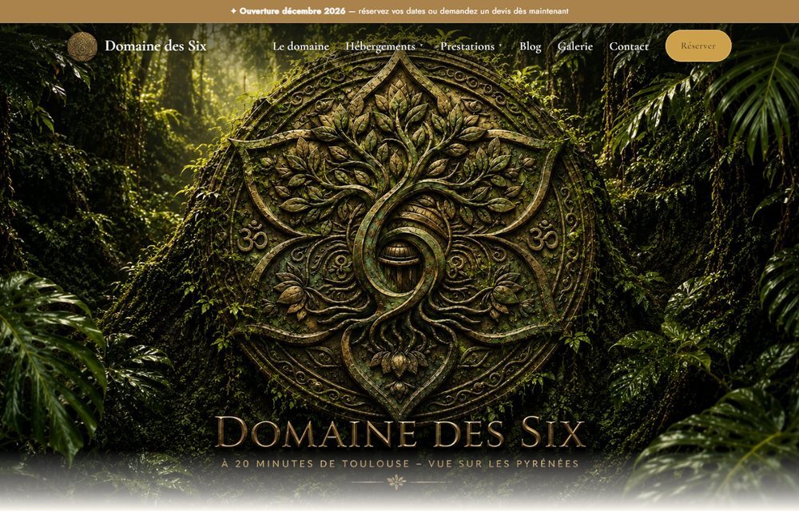
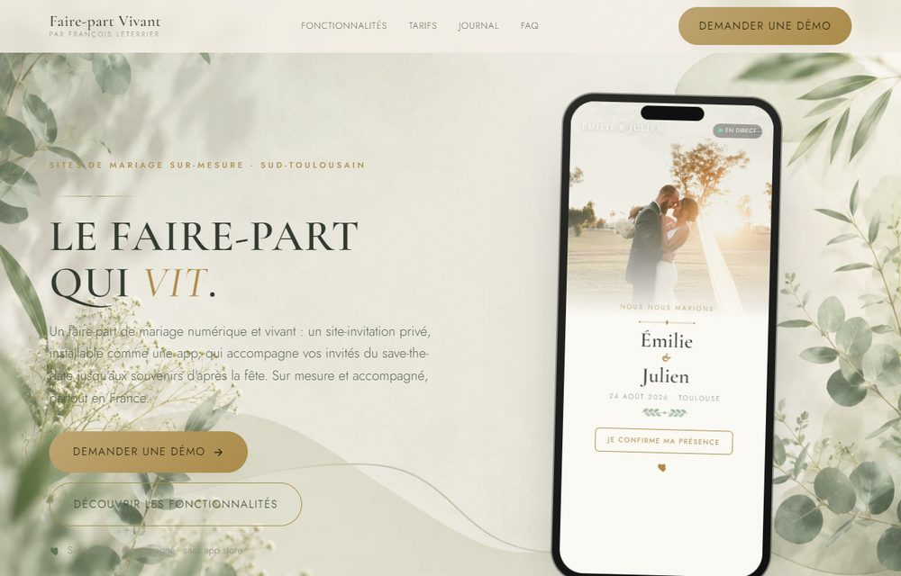

Je suis community manager & créateur de sites à Lavernose-Lacasse (31410). Voici des réalisations réelles et des modèles qui montrent ce que je peux faire pour votre activité.
Étude de cas — Concept Immo Plus
Concept Immo Plus est une agence immobilière indépendante du Sud-Toulousain (Lavernose-Lacasse). J'accompagne l'agence en continu : je conçois et fais évoluer son site, je gère son référencement local et j'anime ses réseaux sociaux — un seul interlocuteur pour toute sa présence en ligne.
La mission
- Gérer le site internet de l'agence et le faire évoluer
- Améliorer la visibilité sur Google dans le secteur
- Animer les réseaux sociaux (Facebook, Google Business)
- Soutenir la diffusion des annonces immobilières
Ce que j'ai mis en place
- Référencement local : structure, balises, contenus optimisés
- Contenus & mises à jour réguliers du site
- Publications réseaux et gestion de la fiche Google Business
- Un suivi de proximité, en lien direct avec l'agence
Les résultats aujourd'hui
Performance actuelle des comptes que je gère pour l'agence — chiffres réels relevés en juin 2026 :
Chiffres réels constatés sur les comptes de l'agence ; résultats propres à ce cas et à son secteur — ils ne constituent pas une promesse de reproductibilité.
Voir le résultat en ligne : conceptimmoplus.com →
L'agence évoque aussi notre collaboration dans un article de son actualité : Diffusion des annonces dans le Sud-Toulousain →
Réalisation — Domaine des Six
Le Domaine des Six est un lieu d'accueil touristique à Lherm (Haute-Garonne), à 20 min au sud de Toulouse : chambres d'hôtes, gîtes et espace événementiel (mariages, séminaires, retraites bien-être). J'ai conçu et réalisé son site internet de A à Z, dans un esprit élégant et nature.

Le projet
- Présenter le domaine, son histoire et ses 5 hébergements
- Donner envie avec une galerie photo et une ambiance soignée
- Faciliter la demande de réservation et le contact
- Ressortir sur « gîte / chambres d'hôtes près de Toulouse »
Ce que j'ai réalisé
- Un site vitrine sur-mesure, design nature (vert & beige), 100 % responsive
- Une fiche détaillée par hébergement, les tarifs par saison et une FAQ
- Formulaire de réservation / contact et galerie photo
- Référencement local intégré (structure, balises, vitesse)
Voir le site en ligne : domainedessix.fr →
Réalisation — Faire-part Vivant
Faire-part Vivant est mon service de faire-part de mariage numériques : des sites-invitation privés, installables comme une application (PWA), avec RSVP en ligne, compte à rebours et galerie souvenirs. J'ai conçu le produit et son site de A à Z — livré partout en France.

Voir le site en ligne : Faire-part Vivant → · découvrir l'offre Faire-part digital.
Témoignages
Je n'affiche que de vrais avis Google, jamais de témoignage inventé. Quelques retours de clients que j'ai accompagnés — sites internet, applications, faire-part et réseaux sociaux :
François gère le site internet et les réseaux sociaux de notre agence, et le travail est impeccable. Réactif, à l'écoute et toujours de bons conseils sur le référencement local. Un vrai partenaire de proximité dans le Sud-Toulousain […] On recommande sans hésiter.
Un travail d'une grande qualité ! Le site est soigné, élégant et parfaitement réalisé. Chaque détail est pensé avec goût, la navigation est fluide et le rendu à la fois moderne et professionnel […] Je recommande sans hésiter.
Un immense merci pour ce magnifique faire-part ! Il est vraiment très réussi, élégant et réalisé avec beaucoup de goût. Le résultat est encore plus beau que ce que j'imaginais. Je recommande vivement !
Après quelques échanges, il a bien cerné mon projet puis a développé une application simple, fonctionnelle mais aussi visuelle, répondant à mes attentes. Merci pour ta réactivité et ton professionnalisme.
François est très professionnel et engagé dans son travail. Il est à l'écoute et a de très bonnes idées. Je recommande vivement !
Je recommande vivement : très studieux, minutieux, et beaucoup d'idées.
Vous êtes client·e ? Votre avis aide d'autres pros à me faire confiance — et ne prend qu'une minute.
Laisser un avis Google →Modèles de sites par métier
Pour vous projeter, j'ai conçu des modèles de sites de démonstration — chacun avec une architecture différente (pas un template recopié), de vraies photos et un design abouti. Ils montrent le niveau de finition que je peux vous livrer.
Restaurant / bar à vin
Site immersif plein écran, navigation par points, galerie d'ambiance.
Voir le modèle →Artisan
Landing de conversion avec formulaire de devis dans le hero, process clair.
Voir le modèle →Voir tous les modèles de sites →
Ce que je peux réaliser pour vous
- Site vitrine ou landing page moderne, responsive et référencé localement
- Gestion de réseaux sociaux (contenus, publications, animation)
- Référencement local et mise en place / optimisation de votre fiche Google Business
- Audit gratuit de votre site ou de votre présence sociale pour savoir par où commencer
Et si la prochaine réalisation, c'était la vôtre ?
Artisan, commerçant ou indépendant du Sud-Toulousain — parlons de votre projet. Premier échange offert.
Demander un échange → Faire un audit gratuit